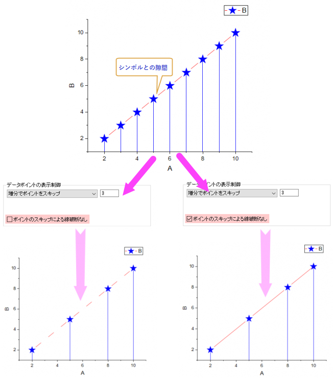

直交座標系の一般的な2Dグラフまたは3DXYY棒グラフの作図の詳細のプロットレベルで、表示タブの設定が可能です。
Originは2DグラフではY軸、3DグラフではY/Z軸をサポートしているので、このオプションを使って現在のプロットがどの軸を基準にしているかを指定することができます。
2Dグラフ、3D XYY/XYZグラフの場合、デフォルトではすべてのプロットが左Y/Z軸にプロットされます（特定のテンプレートからプロットされたものを除く）。このラジオボタンを使って、選択したプロットをどちらのY/Z軸にプロットするかを指定できます。 例えば、右Y/Z軸を選択した場合、選択したデータプロットが右Y/Z軸上にプロットされ、全データを含むような軸スケールに自動で調整されます。
Note：2Dおよび3Dの積み上げ棒グラフを軸別にサブグループ化して作成する場合は、サブグループによる積み上げ/推移を行う（グループタブ内）をチェックし、サブグループを軸によるに設定して、このデータをプロットラジオボックスを使って各棒グラフに異なる軸を設定してください。
2D棒グラフまたは3DXYY棒グラフを作図すると、デフォルトでこのチェックボックスにチェックが付きます。チェックを外すと、グラフ内の棒が非表示になります。
2D/3D棒グラフの上部に中心点のシンボルを表示するか指定します。
プロットの中心点をつなぐ接続線を表示するか指定します。ここにチェックを付けると、線タブが表示され、線のスタイル設定を行うことができます。
2D棒グラフでは、接続線の色はデフォルトで棒の境界線の色に従います。
3D XYY棒グラフでは、接続線の色はデフォルトで3D棒グラフのパターン塗りつぶしに従います。
2D棒グラフでサブセットがある場合、線タブのサブセット内の接続チェックボックスがデフォルトでチェックされ、サブセット内で接続線が追加されます。
グラフサンプル：
_Display2_Tab/450px-The__28Plot_Details_29_Display2_Tab_03.png)
棒の上部中心点から下軸あるいは下側パネルまでのドロップラインを追加するか指定します。棒のドロップラインを追加すると、ドロップラインタブが表示され、ドロップラインの編集が可能です。
XY平面での3D XYY棒の投影を表示するか指定し、棒の投影位置(Y=)を指定します。デフォルトで自動が選択され、Y 軸=軸開始の位置に棒の投影がプロットされます。
Note: このサンプルでは、3D棒グラフはY=-1500から開始していので、XZ平面の投影棒もZ=-1500から開始しています。投影棒のXY平面はY= の位置に配置されます。
データポイントをどのようにスキップするか指定します。
ポイントをスキップせず、全データポイントを表示します。このコントロールグループのデフォルトの選択です。
ドロップダウンリストで増分でポイントをスキップを選択するとデータポイントの頻度を表示でき、頻度をテキストボックスに入力できます。この設定は、データプロットのドロップライン、シンボル、エラーバー、およびデータラベルの表示にも影響します。ベクトルグラフの場合、散布点がスキップされるとベクトルも非表示になります。3D散布図の投影の場合、ポイントスキップオプションは非表示になり、投影は元のプロットの設定に従ってポイントをスキップします。
ポイントスキップテキストボックスにn が入力される場合、n ポイントの内最初の1つだけが表示されます。残りのn-1つのポイントはスキップされます。しかし、最後のデータポイントは常に表示されます。最後のポイントを非表示にしたい場合、@SMEP = 0に設定します。 n は2以上の整数値である必要があります。n = 0または1の場合、ポイントはスキップされません。
線+シンボルグラフでシンボルとの隙間がチェックされている場合、 ポイントのスキップによる線破断なし チェックボックスが表示され、ポイントがスキップされた場合に軸破断するかどうかを指定できます。これを選択すると、データポイントがスキップされても、線は連続したままになります。 
スマートスキップオプションの何れかを選択すると、データ密度と曲線形状に基づいたスマートな演算処理を使用してデータ ポイントをスキップできます。この設定は、データプロットのドロップライン、シンボル、エラーバー、およびデータラベルの表示にも影響します。
スキップ後に保持されるデータポイントの合計を指定することで、データポイントをスマートスキップします。
すべてのデータポイントに対する割合でスキップするデータポイントの数を指定することで、データポイントをスマートスキップします。
さまざまな曲線の形状とデータ密度に基づいて、データポイントをスキップする方法が複数あります。
このアルゴリズムに従って段階的に検索し、そのたびに、設定されたポイント数に達するまで、最大の三角形エリア (現在大きな面積の三角形と上位レベルのより小さな三角形の間) を持つ点のみが保持されます。